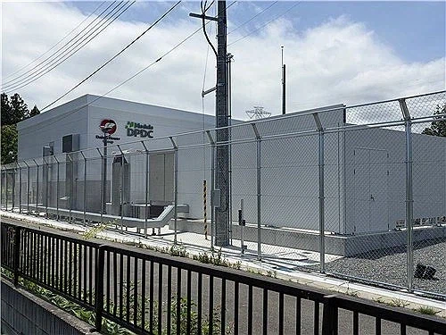

https://bbs.ruliweb.com/best/board/300143/read/76385214

어차피 소음 신경쓸 필요도 없고 땅값도 싸니
데이터 센터가 3개나 돌아가고 있고,
더 설치할 예정.
주민들의 항의가 두렵다면
애초에 주민들이 없는 곳에 지으면 된다는...
https://bbs.ruliweb.com/best/board/300143/read/76385214

어차피 소음 신경쓸 필요도 없고 땅값도 싸니
데이터 센터가 3개나 돌아가고 있고,
더 설치할 예정.
주민들의 항의가 두렵다면
애초에 주민들이 없는 곳에 지으면 된다는...
댓글
수집 당시 댓글 24개
와규먹고싶다 · 3 시간 전
실제 그 발전소 내부 위치는 아니겠지 인근이면 괜찮을듯
유메노아이카찹살젖통 · 2 시간 전
후쿠시마현 존나 커서 위치가 중요함 원전 사고 인근아니면 방사선량도 미비하고
도덕놈 · 3 시간 전
나는야한남자가좋아요 · 3 시간 전
후쿠시마쪽 둘러봤는데 공장이나 산업폐기물 처리장같은 오염유발 시설 안 보이고 진짜 맑고 건강한 곳이었는데 진짜 마른 하늘에 날벼락 맞은듯..
메리제인 · 3 시간 전
저기 유지보수 업무 맡으면 ㅈ같긴 하겠다
포뇨오 · 2 시간 전
대신 단가 비싸지 않을까
번째전생함 · 1 시간 전
사고 터졌을때처럼 헐값에 쓸걸
뒷구르기 · 1 시간 전
공포 게임, 영화, 만화 스토리 뚝딱아님? 사람 없는 곳에 발전기가 돌아가고 데이터센터 유지보수를 한다?
새돈이 · 2 시간 전
근데 원종이들은 갓본국민들 위해서 저기 지원해서 응원안함?
51번째주 · 2 시간 전
이 뜬금없는 무맥락 댓글은 뭐냐 원종이나 영포티나 다 좆같아 ㅋ
미장은신이야 · 2 시간 전
영포티는 왜 나와 ㅋㅋ
51번째주 · 2 시간 전
쉰내나잖아
항문자위 · 2 시간 전
반대쪽 힘실어주려고 일부러 분탕치나 싶은 저능아 앵무새처럼 보일정도
꿈을꾸어라 · 1 시간 전
이 뜬금없는 무뇌 댓글은 뭐냐. 너나 원댓이나 똑같다는걸 너는 모르는듯
쿠킹덤 · 2 시간 전
혐오를 하기위해 커뮤질하는 역겨운 부류
흙기이사 · 2 시간 전
몇수 앞을 내다본걸까!!
RHEL · 2 시간 전
인터넷 돌아다니기도 이제 찝찝하네 방사능 오염된 파일을 다운받으면 나도 피폭되는거 아님? 시발 일본놈들
옥수수수수염염차 · 46 분 전
아~ 내가 이 드립 칠랬는데 니가 하면 오또케
호갱킹 · 2 시간 전
ㅋㅋ 머리잘쓰노
습관성취침러 · 1 시간 전
그러게 오히려 후쿠시마에 원전 더 많이지으면되는거아냐? 방폐장도 만들고 혐오시설 몰빵하면 되겠다. 거기서 나오는 지원금 세수는 N빵때리고 ㅋㅋㅋ
존나조음 · 45 분 전
아이디어 좋네 이왕 좆된거니 처음부터 버린 땅이라 생각하고 데이터 센터, 핵폐기물 재처리공장, 고준위 핵폐기물 매립지, 쓰레기 소각장, 교도소, 소년원 같은거 다 때려넣기 최적의 장소일 듯
워니랑 · 35 분 전
원전 터지기전 치바 갔었는데 ,리센느 미나미 고향이 지바임. 도쿄 바로위라 접근성도 좋고 자연도 잘 가꾸고 음식도 좋고 사람들도 친절함. 후쿠시마는 거기서 위로 더 가는데 볼게 없어서 안 갔음
YOASOBI · 35 분 전
???:데이터를 통해서 방사능이 유입된다구요!!
난나야나 · 3 분 전
우리도 태백, 사북 이런데에 카지노 말고 데이터 센터나 존나게 짓자 거긴 애초애 춥잖아